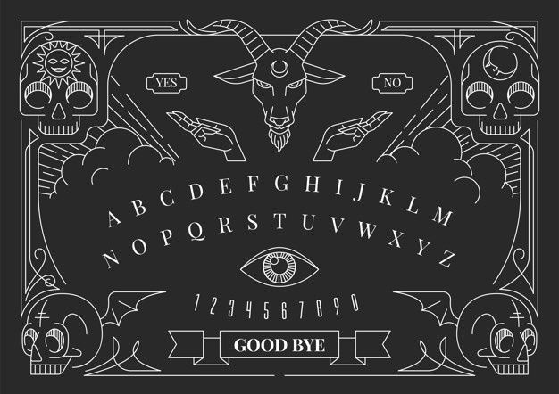

🗣 VOZ
♪ SONIDO
⛧
El Grimorio
de Belphegor
— Un Juego de Ouija Maldita —
A B C D E F G H I J K L M
N O P Q R S T U V W X Y Z
1 2 3 4 5 6 7 8 9 0
⛧ ABRIR EL GRIMORIO ⛧
ADIÓS · GOODBYE · VALE
☉
☽
Alma
100
Inventario

⛧ PREGUNTAR A LA OUIJA ⛧